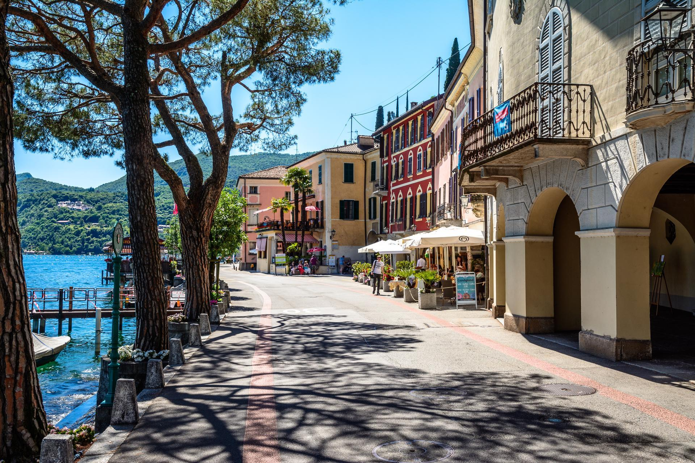
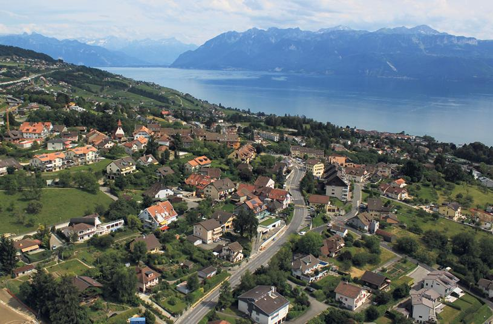
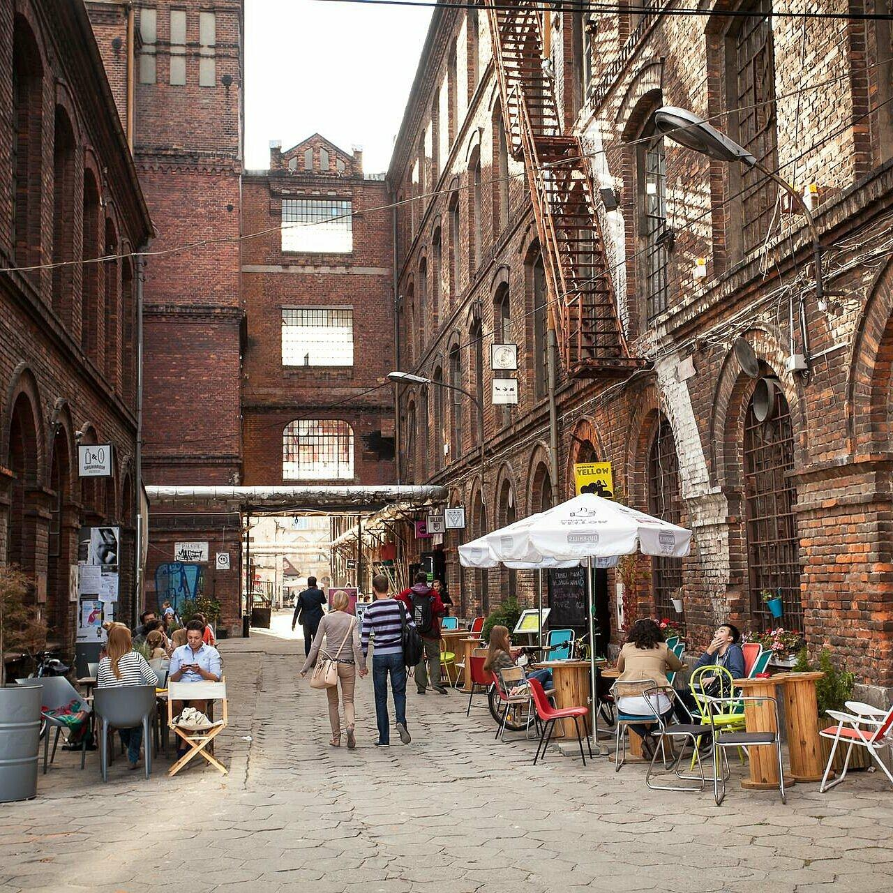

Valdoria está ubicada en un valle rodeado de montañas, junto a un enorme lago. Su clima es templado, con inviernos fríos y veranos cálidos.
Ciudad
Valdoria
País
República de Arkenia
Población
1,8 millones de habitantes
Fundación
Asentamiento original hace aproximadamente 1.200 años; reconocida oficialmente como ciudad en 1342.
Clima
Templado, con inviernos fríos y veranos cálidos.
Gentilicio
Valdorianos / valdorianas
Características
🏙️ Centro: rascacielos modernos mezclados con edificios antiguos de piedra.
🌊 Lago Esmeralda: atraviesa la ciudad y tiene un paseo costero enorme.
🚇 Transporte: metro subterráneo y una red de tranvías eléctricos.
🌳 Parque de los Cedros: un parque gigantesco en el centro, casi del tamaño de varios barrios.
🏰 Castillo de Valdoria: antigua fortaleza situada sobre una colina, hoy convertida en museo.
⚽ Estadio Aurora: capacidad para 65.000 personas, sede del Valdoria FC.
Barrios principales
Centro Viejo
El origen de Valdoria
Hace aproximadamente 1.200 años, un grupo de familias llegó a las orillas del Lago Esmeralda buscando un lugar donde establecerse. La región estaba rodeada de montañas y tenía tierras fértiles, abundante agua y una posición estratégica para el comercio.
Los primeros habitantes construyeron casas de madera y piedra cerca del lago. Se dedicaban a la pesca, la agricultura y el intercambio de mercancías con otros pueblos de las montañas.
El asentamiento recibió el nombre de Valdor, que en el antiguo idioma de la región significaba "valle protegido".
La gran expansión
En el año 1342, Valdor fue reconocido oficialmente como ciudad. Los comerciantes comenzaron a llegar desde lugares lejanos, trayendo telas, metales, especias y libros.
La plaza central se convirtió en el corazón de la ciudad, donde se celebraban ferias, festivales y reuniones políticas. Muchas de las casas de piedra que todavía existen hoy fueron construidas durante esa época.
La actualidad
Hoy, el Centro Viejo es el barrio más visitado de Valdoria. Sus calles conservan las fachadas antiguas, aunque en su interior hay cafeterías, librerías, restaurantes y pequeños negocios.
Distrito Aurora
El nacimiento de la ciudad moderna
Durante siglos, Valdoria fue una ciudad comercial relativamente pequeña. Todo cambió en 1898, cuando se descubrieron grandes reservas de minerales en las montañas cercanas, lo que atrajo a miles de personas y generó la construcción de fábricas, estaciones de tren y bancos.
Cronología del distrito
1898 — Descubrimiento de reservas minerales en las montañas cercanas.
1926 — Un grupo de arquitectos presenta el proyecto del nuevo distrito.
1970s — Crisis económica: cierre de fábricas y deterioro de la zona.
1984 — Plan de renovación urbana: nuevos edificios, universidades y espacios públicos.
2018 — Inauguración de la Torre Aurora, de 312 metros de altura.
El distrito del futuro
En la actualidad, Aurora es el centro económico de Valdoria. El edificio más famoso es la Torre Aurora, con un mirador desde el que se puede observar todo el Lago Esmeralda y una estructura circular en la cima que se ilumina de distintos colores durante las celebraciones de la ciudad.
Otros barrios
Puerto Azul

El barrio de los comerciantes
Puerto Azul nació como un pequeño puerto pesquero durante los primeros años de Valdoria.
Durante la Edad Media, era el lugar donde llegaban barcos cargados de mercancías. Los pescadores vendían sus productos en el mercado y los comerciantes intercambiaban telas, metales y alimentos.
El puerto se convirtió en uno de los principales motores económicos de la ciudad.
La época industrial
Durante el siglo XIX, Puerto Azul se transformó en una zona industrial. Se construyeron almacenes, fábricas y astilleros.
Muchos habitantes trabajaban en el puerto y vivían en casas pequeñas cerca del agua.
A mediados del siglo XX, la actividad industrial comenzó a disminuir y varios edificios quedaron abandonados.
La transformación turística
En 1995, la ciudad lanzó un proyecto para recuperar la zona. Los antiguos almacenes fueron convertidos en restaurantes, galerías de arte y mercados. Se construyó un paseo costero con bancos, árboles y espacios para espectáculos.
Actualmente, Puerto Azul es uno de los barrios más visitados de Valdoria. Durante el verano, las calles se llenan de músicos, turistas y vendedores de artesanías.
Las Colinas

El barrio de las familias
Las Colinas comenzó a desarrollarse a principios del siglo XX. La zona estaba ubicada sobre las laderas de las montañas, lejos del ruido del puerto y de las fábricas.
Al principio, las casas eran pequeñas viviendas de campo. Con el crecimiento de Valdoria, muchas familias comenzaron a construir viviendas más grandes.
El crecimiento del barrio
Durante las décadas de 1950 y 1960, Las Colinas se convirtió en una de las zonas residenciales más importantes de la ciudad.
Se construyeron escuelas, plazas y pequeños comercios.El barrio también fue elegido por artistas, profesores y empresarios que buscaban vivir cerca de la naturaleza.
La actualidad
Hoy, Las Colinas es un barrio tranquilo, con calles arboladas, casas amplias y vistas al lago.
En la parte más alta se puede observar a lo lejos el centro de Valdoria. Los habitantes suelen reunirse allí durante las celebraciones de Año Nuevo para contemplar los fuegos artificiales.
El Barrio Ferroviario

El barrio de los trenes
El Barrio Ferroviario nació en 1891, cuando se inauguró la primera estación de tren de Valdoria.
La llegada del ferrocarril transformó por completo la ciudad. Se construyeron talleres, depósitos, fábricas y viviendas para los trabajadores.
Durante décadas, el barrio fue uno de los lugares más activos de Valdoria. Los trenes llegaban cargados de mercancías y pasajeros desde regiones lejanas.
La crisis ferroviaria
A partir de la década de 1970, muchas fábricas comenzaron a cerrar debido a la modernización del transporte.
El barrio perdió gran parte de su actividad económica y varios edificios quedaron abandonados y durante años, las antiguas estaciones y talleres fueron considerados lugares peligrosos.
El renacimiento artístico
En 2002, un grupo de artistas comenzó a ocupar algunos de los antiguos almacenes para convertirlos en talleres y galerías.
La iniciativa tuvo éxito y atrajo a jóvenes, músicos, diseñadores y emprendedores. La ciudad decidió apoyar el proyecto y transformó el barrio en un distrito cultural.
La actualidad
Actualmente, el Barrio Ferroviario es conocido por sus murales, galerías de arte, cafés y espacios musicales.
Cada año se realiza el Festival de Arte Ferroviario, donde artistas de toda Arkenia exponen sus obras.
Costumbres
Los domingos, los valdorianos suelen reunirse en la plaza central del Centro Viejo para el tradicional mercado de las flores, donde se venden productos locales y artesanías.
Durante el invierno es costumbre encender faroles de papel en el paseo costero del Lago Esmeralda como parte del Festival de las Luces.